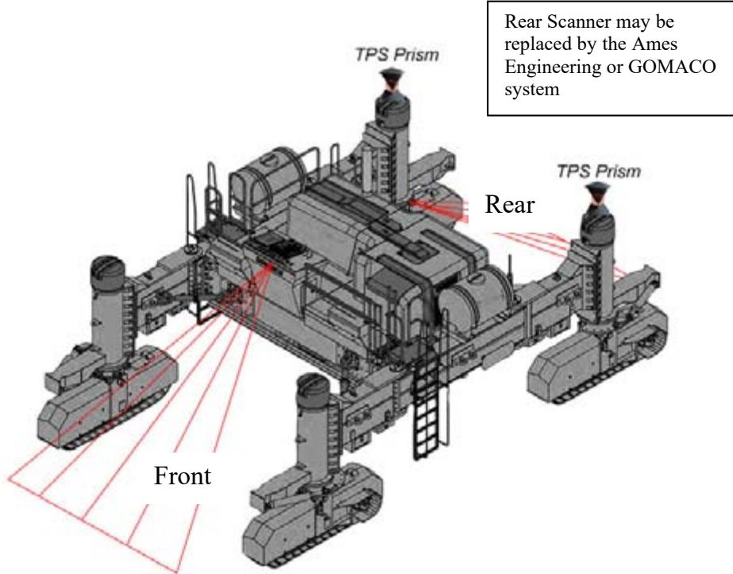
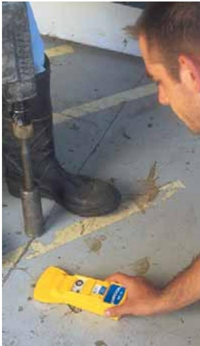
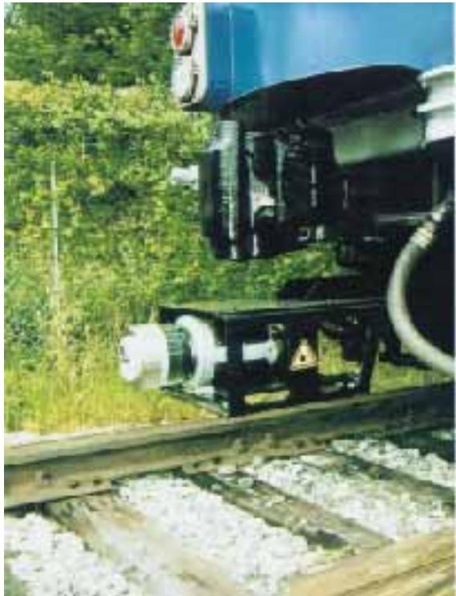
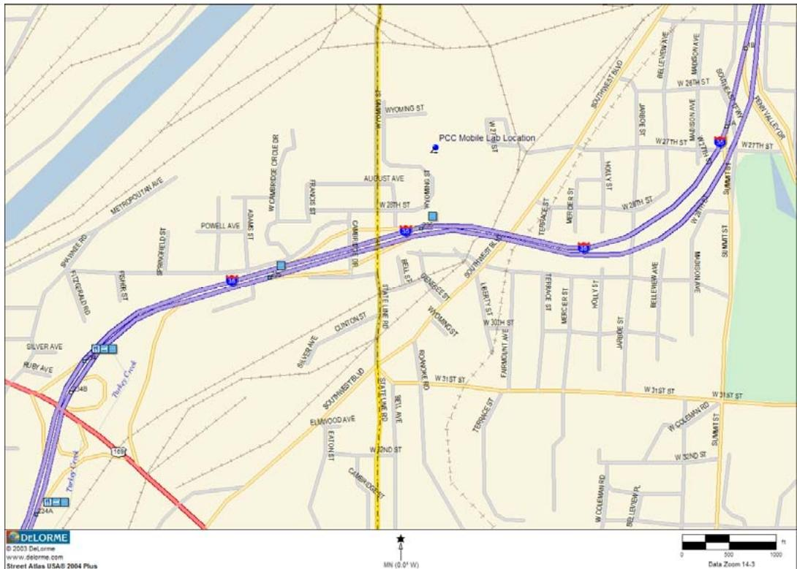
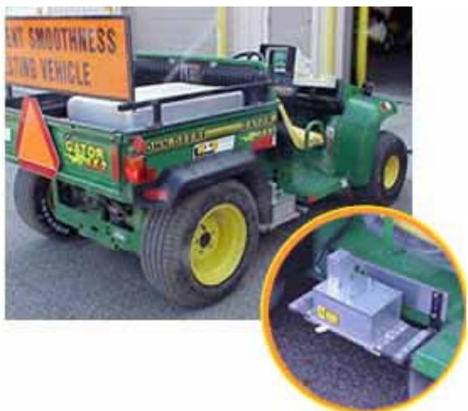
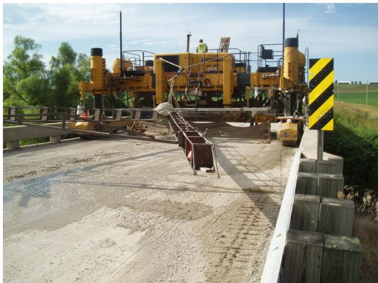

Construction & Equipment
Construction & Equipment represents the systematic engineering and physical execution of infrastructure projects, integrating specialized machinery for material placement with rigorous analytical methodologies to verify compliance with design specifications. The fundamental challenge in this domain lies in balancing competing performance attributes such as texture, friction, smoothness, and durability, which require a mechanistic understanding of how materials, construction methods, and surface characteristics interact to ensure long-term structural integrity [1]. Execution relies on precise control over material properties, including the management of air void systems for freeze-thaw resistance and the use of jointing mechanisms like dowel bars to distribute traffic loads across slabs [2]. Verification is achieved through nondestructive evaluation techniques that provide continuous data on dimensional tolerances, alongside chemical analysis methods that rapidly assess elemental composition to ensure material uniformity and quality control during construction [3] [4].
CP Tech Center reports covering “Construction & Equipment” also include the following subtopics: Concrete Paving Construction and Quality Assurance & Field Testing.
Construction & Equipment unifies the physical execution of infrastructure projects through specialized tools, rigorous verification, and precise material handling. Concrete Paving Construction operationalizes this effort by deploying automated machinery to place, finish, and joint pavements in strict adherence to design specifications. Quality Assurance & Field Testing integrates high-tech analytical methodologies directly into that workflow to verify compliance with those same standards.
Sources (6)
Sub-concepts (2)
Key findings
- Identified a critical lack of validated methods and standardized protocols for measuring multidimensional surface characteristics, such as friction and noise, which hinders real-time quality control during construction [1].
- Demonstrated that real-time profiling devices mounted on paving trains can accurately detect specific sources of roughness in plastic concrete, such as dowel bar ripple, enabling immediate corrective actions during placement [5].
- Evaluated nondestructive evaluation methods and found that laser scanning provides reliable continuous virtual core data for thickness measurement with low variability compared to traditional core sampling [4].
- Observed that electromagnetic sensing offers a discrete measurement approach capable of detecting dowel bar placement and pavement thickness, presenting a potentially faster path to immediate field implementation than ultrasonic methods [4].
- Established that construction failures are frequently driven by material inconsistencies like unmixed or segregated mixes resulting from flash setting or inadequate mixer maintenance, necessitating rigorous pre-pour equipment inspections [2].
- Revealed significant trade-offs between rapid rehabilitation and long-term durability, particularly regarding the susceptibility of bonded overlays to reflective cracking if underlying conditions are not strictly controlled [2].
- Showed that stringless or GPS-controlled slipform pavers offer superior alignment tolerances compared to conventional stringline control but require extensive training and are sensitive to environmental interference [6].
- Measured substantial cost savings from using geotextile bond breakers over asphalt, although the long-term performance of these materials remains unverified in U.S. contexts [6].
Real-Time Quality Control and Equipment Integration
Evidence: 5 reports (4 primary)
Real-time quality control in concrete construction integrates nondestructive evaluation technologies, such as scanning lasers and eddy current sensing, to provide continuous thickness data that overcomes the spatial limitations of traditional core sampling [4]. These integrated systems enable immediate assessment of material uniformity and dimensional compliance against design specifications without requiring destructive coring or extensive patching [4].
The figure below illustrates an anticipated vision of a laser scanning concrete thickness profiler.

Anticipated vision of laser scanning concrete thickness profiler [4]The figure displays a schematic view of a slipform paver equipped with multiple tracking prisms and red lines indicating the field of view for laser scanners. A text box notes that the rear scanner may be replaced by the Ames Engineering or GOMACO system, while labels identify the front and rear sections of the machine. This apparatus illustrates a proposed setup for implementing a laser scanning system to measure subgrade and pavement surface profiles during construction.
Research problem — The industry requires a shift from slow, discrete acceptance testing to continuous, nondestructive feedback systems that provide real-time data on pavement thickness and material properties during construction [1] [2] [4]. Current quality control procedures often function as duplicative acceptance checks rather than true process controls, failing to detect adverse effects like admixture incompatibility or overvibration that degrade long-term durability [2]. There is a critical need for real-time verification of mix proportions and elemental composition to ensure delivered concrete matches design specifications, overcoming the limitations of traditional batch tickets and portable analytical tools [3]. Developing integrated equipment solutions involves balancing trade-offs between measurement precision, cost, and labor intensity while addressing the lack of mechanistic understanding regarding how construction-stage variables influence final in-service performance [5] [1] [4].
The following figure illustrates a practical application of such equipment by demonstrating how the Zircon MT6 measures the depth of metal.

Zircon MT6 measures depth of metal to 6 inches +/- 1 inch [4]A worker uses a handheld yellow eddy current device on the surface of concrete pavement.
State of the art — The industry is transitioning from traditional method specifications to performance-based systems that utilize Intelligent Construction Systems (ICS) for continuous, real-time monitoring of critical properties such as temperature, moisture, thickness, and smoothness [1]. To bridge the gap between static laboratory testing and dynamic field conditions, practitioners are deploying high-tech equipment directly to jobsites to enable real-time detection of incompatibility issues like false set or uncontrolled stiffening that traditional tests often miss [2]. Quality assurance practices are shifting from labor-intensive, destructive core sampling toward nondestructive evaluation methods, including laser scanning and electromagnetic sensing, to provide real-time thickness measurement and continuous quality assurance [4].
The following figure illustrates a key piece of nondestructive evaluation equipment used in this modern approach to quality assurance.

Riegl 2D laser scanner LMS-Q20i mounted on a rail vehicle. [4]The image displays a Riegl 2D laser scanner, specifically the LMS-Q20i model, mounted to the undercarriage of a rail vehicle positioned on railway tracks.
Findings from the reports
- Identified a critical lack of validated methods and standardized protocols for measuring multidimensional surface characteristics, such as friction and noise, which creates a gap in real-time quality control during construction [1].
- Demonstrated that conventional quality control often fails to ensure durability because projects meeting standard air content specifications frequently exhibit unacceptable spacing factors, leading to premature distress [2].
- Established the Air Void Analyzer (AVA) as essential equipment for evaluating the complete air void system on-site, enabling real-time adjustments to admixture dosages before placement issues arise [2].
- Evaluated non-destructive evaluation techniques, revealing that laser scanning provides reliable continuous thickness data with low variability but requires complex data processing algorithms for interpolation [4].
- Showed that electromagnetic eddy current sensing offers a more economical and immediate field deployment option for discrete thickness measurement compared to laser scanning, while also detecting dowel bar placement [4].
- Confirmed that real-time profiling devices effectively detect specific construction-induced roughness sources, such as dowel bar ripple and string line disturbances, allowing for immediate corrective actions during paving [5].
- Observed that applying an auto-float significantly reduces dowel bar ripple compared to manual floating, which provides less consistent improvements in surface quality [5].
- Noted that outside wheel tracks consistently exhibit higher roughness than inside tracks, primarily driven by dowel bar ripple, highlighting the need for targeted equipment adjustments [5].
- Highlighted the industry’s transition toward high-speed rehabilitation methods and precast modular technologies to mitigate perceptions of slowness and enable rapid construction windows [1].
Novelty & rigor — The field is shifting from isolated, labor-intensive processes to fully integrated intelligent construction systems that enable continuous, real-time evaluation and automatic adjustment during paving [1]. Novelty in this area includes the deployment of mobile concrete research labs equipped with specialized tools like air void analyzers and X-ray fluorescence units to monitor critical durability properties directly on jobsites, bridging the gap between centralized laboratories and construction sites [2]. Reproducing these integrated approaches requires implementing standardized electronic communication protocols and utilizing continuous, real-time nondestructive sensing technologies to monitor pavement properties during placement for immediate feedback-based adjustments [1] [2].
The following figure illustrates the geographic context of this work by mapping the Kansas Shadow Project Site.

Map of Kansas Shadow Project Site [2]The figure displays a map of the I-35 and I-635/I-70 reconstruction project in Wyandotte County, Kansas. A specific location is marked as the “PCC Mobile Lab Location” situated adjacent to the highway infrastructure.
Across the reviewed reports, real-time quality control is increasingly supported by integrated equipment that addresses specific durability and surface performance gaps, such as using Air Void Analyzers for on-site admixture adjustments to prevent premature distress and deploying laser scanning or electromagnetic sensors for continuous or discrete thickness monitoring to reduce the variance associated with traditional core sampling. [2] [4]
The following figure illustrates an Air Void Analyzer, a key piece of integrated equipment used for on-site admixture adjustments.
 Air Void Analyzer (AVA) with isolation base. [2]
Air Void Analyzer (AVA) with isolation base. [2]
The figure shows a stainless steel mobile laboratory unit containing an Air Void Analyzer, which is used to evaluate the air void system of fresh concrete on-site. The device features a control panel with indicator lights and a digital display, allowing operators to determine total volume, size, and distribution of air voids. This equipment supports quality assurance by enabling real-time adjustments to concrete batching to improve freeze-thaw durability.
Implications — The industry must transition from empirical, sparse sampling methods to continuous, nondestructive evaluation technologies to resolve payment inequities and address staffing constraints [4]. Construction practices should shift toward proactive quality control by utilizing real-time sensing to identify defects during placement, enabling immediate corrective actions before the concrete sets [5]. Developers and agencies must collaborate to create unified models and automated equipment that balance competing functional demands like friction and noise while integrating sensing technologies for mechanistic control [1].
The following figure illustrates an eddy current sensor used for measuring concrete thickness.
 Schematic of an eddy current sensor setup for measuring concrete thickness. [4]
Schematic of an eddy current sensor setup for measuring concrete thickness. [4]
The figure displays a cross-section of pavement layers, including concrete and subbase, with a coil placed on the surface to generate a magnetic field. It illustrates two scenarios: one where no conductive plate is present under the pavement, resulting in low conductivity, and another where a conductive plate is placed at the bottom to induce eddy currents.
Limitations — Real-time profilers measuring plastic concrete cannot accurately replicate the absolute smoothness values obtained by inertial profilers on hardened pavement due to differences in measurement wavebands and calibration errors [5]. These real-time devices are prone to extraneous artifacts, such as false features from laser tining interactions or short-wavelength noise, which can skew indices like the IRI without significant operator expertise and protective measures [5]. Accurate real-time measurement often requires complex coordinate control systems that add substantial cost and logistical complexity, while field implementation of technologies like laser scanning is constrained by environmental factors such as dust and poor lighting [4].
The following figure illustrates a typical example of the laser-based technology used for such testing.

Ames Engineering, Inc., road profiling laser to test smoothness [4]The image displays a green utility vehicle equipped with an orange warning sign and a specialized sensor apparatus mounted on the rear. This device is used for nondestructive evaluation (NDE) to determine pavement smoothness by using laser beams fired in close proximity to the concrete pavement. The system captures coordinate data within acceptable tolerances for a concrete paver.
Advanced Testing & Performance Trade-offs
Evidence: 4 reports (2 primary)
Advanced testing methodologies enable the rapid, non-destructive assessment of material composition and physical properties directly at construction sites [3]. These analytical techniques provide immediate feedback on ingredient proportions and quality control metrics, bridging the gap between laboratory specifications and field execution [3]. Performance trade-offs arise because pavement surface characteristics such as friction, smoothness, noise, and durability are often mutually exclusive or competing attributes [1]. Optimizing one functional requirement typically degrades another, necessitating a mechanistic understanding of how material choices and construction methods influence long-term surface behavior [1].
Research problem — The industry faces a critical tension between the efficiency demands of modern concrete overlay techniques and the spatial constraints imposed by traditional construction methods, which often compromise site access and traffic flow [6]. Implementing advanced machine control systems introduces significant trade-offs regarding technical reliability, as environmental interference and communication latency can hinder real-time surface mapping accuracy [6]. Optimizing these processes requires resolving conflicts between smoothness specifications, geometric corrections, and material yield expectations, particularly when balancing structural integrity with the need for rapid traffic return through maturity monitoring [6].
State of the art — Field implementation involves balancing technological adoption with logistical trade-offs, including the use of cost-effective geotextile bond breakers and optimizing project geometry to manage weather sensitivity and narrow right-of-way constraints [6].
The following figure illustrates the specific nailing pattern required for securing these geotextile materials to the existing pavement.
 Geotextile material secured to the existing pavement surface with nails prior to concrete placement. [6]
Geotextile material secured to the existing pavement surface with nails prior to concrete placement. [6]
The image displays a wide expanse of black geotextile fabric laid over an existing road base, extending towards a line of trees and vegetation in the background. Small fasteners are visible distributed across the surface of the material to secure it in place. The materials were attached to the existing pavement with nails, shown the figure, from Hilti ramset-type guns.
Findings from the reports
- Identified critical trade-offs between rapid rehabilitation and long-term durability, noting that bonded overlays improve structural capacity but are highly susceptible to reflective cracking and debonding if underlying conditions or high early-strength mixes are not strictly controlled [2].
- Demonstrated that joint performance relies heavily on precise dowel bar alignment and appropriate sealant selection, as misalignment causes joint lock-up and premature failure while ineffective sealing accelerates base deterioration through water infiltration [2].
- Observed that construction failures are frequently driven by material inconsistencies such as unmixed or segregated mixes resulting from flash setting or inadequate mixer maintenance, necessitating rigorous pre-pour equipment inspections [2].
- Evaluated the transition to stringless machine control systems for slipform pavers, which minimize paving train width and reduce survey time in narrow rights-of-way compared to conventional stringline control that forces traffic onto soft shoulders [6].
- Revealed significant operational trade-offs with GPS-equipped systems, where communication latency and signal interference from environmental obstructions restrict real-time surface mapping and require slow travel speeds or extensive static control points [6].
- Established that concrete maturity testing is essential for determining safe opening times and enabling earlier joint sawing based on specific flexural strength thresholds, with strength gain rates varying significantly based on aggregate type and weather conditions [6].
- Reported an industry shift toward performance-related specifications to better manage complex interactions between material properties, construction practices, and environmental factors such as high temperatures that exacerbate shrinkage risks [2].
Novelty & rigor — The field is shifting from traditional stringline guidance to ‘stringless’ machine control systems that leverage GPS or total station data with constant-flow hydraulic pavers to replicate designer models without physical guides [6]. Portable X-ray fluorescence technology offers a novel on-site analytical method for verifying concrete mix proportions by assessing elemental oxides, thereby bridging the gap between prescriptive specifications and performance-based quality assurance [3]. Reproducing these high-precision operations requires integrating electronic paver controls with specific surface preparation protocols, while XRF analysis demands strict sample preparation and consistent device positioning to ensure measurement reliability [6] [3].
The following figure illustrates a key piece of equipment used in these advanced paving operations.

Gomaco 2800 Commander slipform paver in operation on a concrete pavement project. [6]The image displays a large yellow construction machine, identified as a Gomaco 2800 Commander slipform paver, positioned on a fresh concrete surface. A worker in high-visibility gear is visible standing on the machinery’s platform, which includes various mechanical components and guide structures extending towards the ground. The construction time was longer than would be expected for a project of this nature due to work by the contractor, contract surveyor, and research team to understand the modeling process.
Reported values
| Parameter | Value | Context | Source |
|---|---|---|---|
| bond breaker thickness | 0.1+/- inch | geotextile bond breakers | [6] |
| control elevation tolerance | 0.01–0.05-foot | model and machine control elevations for smoothness requirements | [6] |
| estimated flexural strength | 500 psi | concrete maturity measurements goal | [6] |
| flexural strength | 350 psi | concrete in less than 24 hours after paving | [6] |
| HMA thickness | 1 inch | versus geotextile bond breakers | [6] |
| horizontal joint alignment tolerance | 1 inch | joint in the overlay from the existing joint | [6] |
| time to achieve flexural strength | less than 24 hours | test sites achieving 350 psi flexural strength | [6] |
Implications — Agencies must enforce rigorous quality control on high-early-strength mixes and joint alignment to prevent premature distress, as these material properties are highly sensitive to placement variations [2]. Pre-construction equipment inspections and tighter enforcement of quality measures are essential to mitigate risks from environmental interactions such as flash setting and shrinkage [2]. The adoption of advanced machine control systems requires careful management of environmental signal interference, while maturity monitoring enables accelerated timelines through precise determination of sawing and opening times [6].
The following figure illustrates a common distress pattern resulting from these challenges, showing pavement where a crack has formed along the longitudinal joint, but remains tight.
 A tape measure placed on a concrete pavement surface next to a longitudinal joint crack. [6]
A tape measure placed on a concrete pavement surface next to a longitudinal joint crack. [6]
The image displays a close-up view of a concrete pavement surface featuring a visible longitudinal joint and a small crack indicated by an arrow, with a blue tape measure included for scale.
Limitations — Reflective cracking mitigation strategies often underperform due to inadequate quality control and material incompatibilities, while joint performance issues like dowel misalignment can lead to premature structural failure despite mechanistic design intentions [2]. Advanced GPS-based surface mapping systems are highly susceptible to environmental interference from factors such as dense foliage or weather conditions, which can obstruct signals and reduce accuracy during active construction [6]. Current moving GPS mapping technology lacks sufficient vertical precision for critical smoothness and quantity control in slipform paving, necessitating slower data collection speeds or stationary positioning to ensure coordinate reliability [6].
The following figure illustrates a typical field setup for such data collection systems.
 John Deere Gator equipped with GPS receiver and laser profiler for pavement surface mapping. [6]
John Deere Gator equipped with GPS receiver and laser profiler for pavement surface mapping. [6]
The image displays a green utility vehicle outfitted with a large rectangular sensor array mounted on the roof, which serves as a GPS receiver and laser profiler. This apparatus is used for data collection to determine the ability of the GPS system to map the existing pavement surface to a vertical accuracy sufficient for pavement overlay quantity estimation and control.
Related concepts
In this hierarchy
- Parent: CP Tech Center Reports
- Child: Concrete Paving Construction
- Child: Quality Assurance & Field Testing
Related by shared evidence
- CP Tech Center Reports — shares 6 reports
- Dowel Bar — shares 4 reports
- Pavement Smoothness — shares 4 reports
- Cementitious Materials & Chemistry — shares 3 reports
- Concrete Curing — shares 3 reports
- Concrete Materials & Mixtures — shares 3 reports
- Concrete Overlay — shares 3 reports
- Concrete Paving Construction — shares 3 reports
Similar topics
- Concrete Paving Construction
- CP Tech Center Reports
- Stringless Paving
- Intelligent Construction Systems
- Pavement Smoothness
- Condition Evaluation & Nondestructive Testing
- Concrete Curing
- Concrete Pavement Joint
References
- D. Harrington, R. Rasmussen, D. Merritt, T. Cackler, and P. Taylor, "Long-Term Plan for Concrete Pavement Research and Technology—The Concrete Pavement Road Map (Second Generation): Volume II, Tracks (FHWA-HRT-11-070)," National Center for Concrete Pavement Technology, Iowa State University, Ames, IA, 2012. [Online]. Available: https://www.fhwa.dot.gov/publications/research/infrastructure/pavements/pccp/11070/11070.pdf
- J. Grove, G. Fick, T. Rupnow, and F. Bektas, "Material and Construction Optimization for Prevention of Premature Pavement Distress in PCC Pavements," National Concrete Pavement Technology Center, Ames, IA, Rep. TPF-5(066), 2008. [Online]. Available: https://www.intrans.iastate.edu/wp-content/uploads/2018/03/mco-final.pdf
- P. C. Taylor, E. Yurdakul, and H. Ceylan, "Concrete Pavement MDA: Application of a Portable X-Ray Fluorescence Technique to Assess Concrete Mix Proportions," National Concrete Pavement Technology Center, Ames, IA, Rep. TPF-5(205), 2012. [Online]. Available: https://www.intrans.iastate.edu/research/completed/concrete-pavement-mixture-design-and-analysis/
- E. J. Jaselskis, E. T. Cackler, R. C. Walters, J. Zhang, and M. Kaewmoracharoen, "Using Scanning Lasers for Real-Time Pavement Thickness Measurement, Phase I," Center for Transportation Research and Education, Ames, IA, Rep. TR-538, 2006. [Online]. Available: https://www.intrans.iastate.edu/wp-content/uploads/2018/03/scanning_lasers_web.pdf
- J. K. Cable, S. M. Karamihas, M. Brenner, M. Leichty, T. Tabbert, and J. Williams, "Measuring Pavement Profile at the Slip-Form Paver," Center for Portland Cement Concrete Pavement Technology, Iowa State University, Ames, IA, Rep. TR-512, 2005. [Online]. Available: https://www.intrans.iastate.edu/wp-content/uploads/2018/03/tr512_pavement_profile.pdf
- P. D. Wiegand, J. K. Cable, T. Cackler, and D. Harrington, "Improving Concrete Overlay Construction," National Concrete Pavement Technology Center, Ames, IA, Rep. TR-600, 2010. [Online]. Available: http://publications.iowa.gov/20076/1/IADOT_tr_600_Improving_Concrete_Overlay_Construction_2010.pdf
Feedback on this page